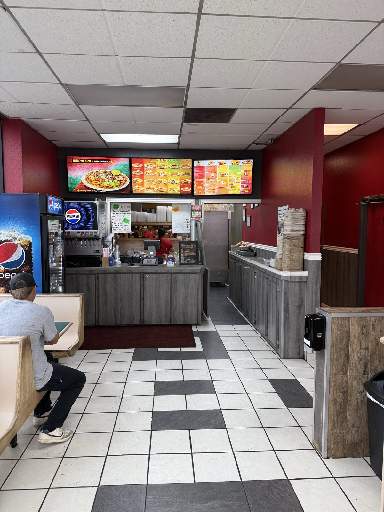
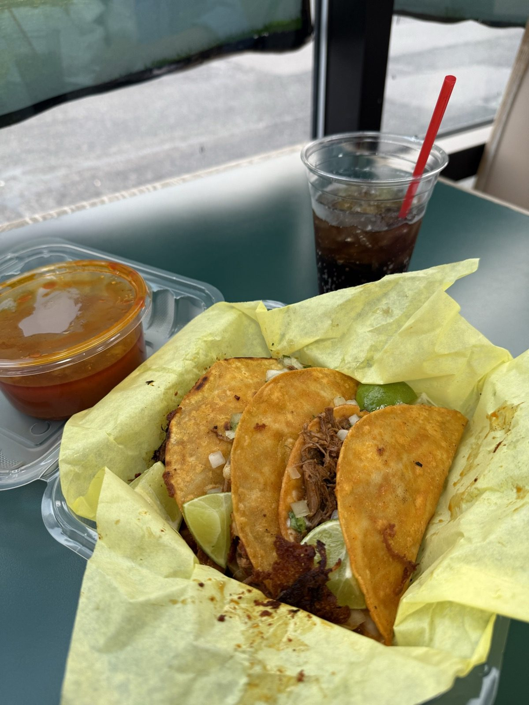
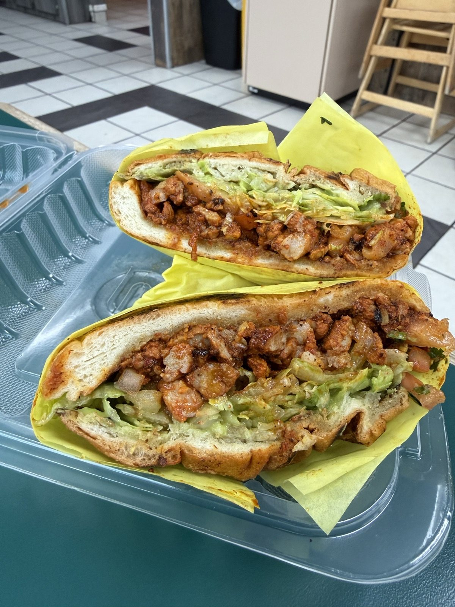
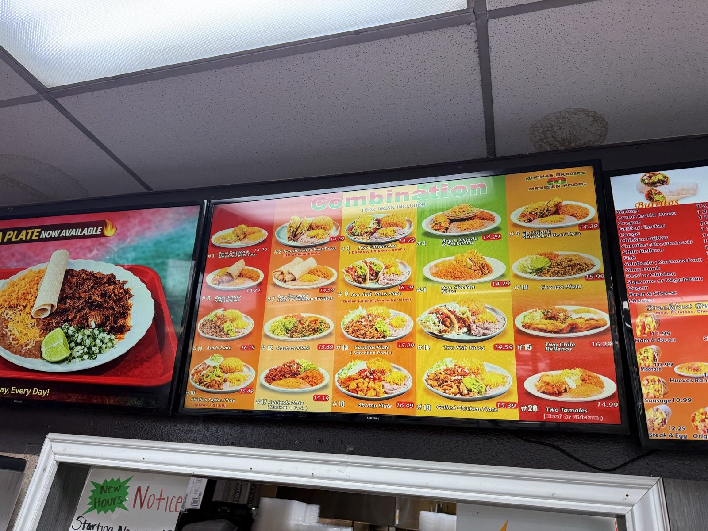
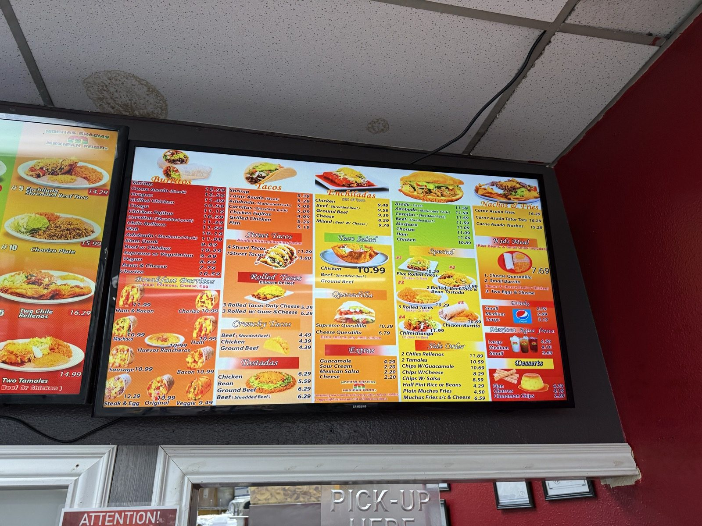
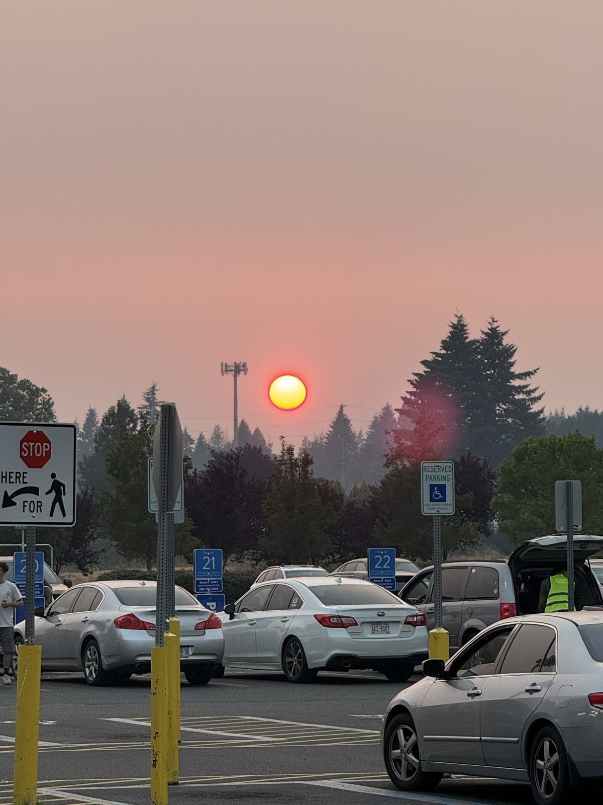

Quesabirria, and a Sun the Wrong Color

There was smoke over the whole state on Wednesday, the way there is most Augusts now, and it does something to the light in the evening that you notice before you notice anything else. I ate before it got interesting. Dinner was quesabirria tacos at Muchas Gracias Mexican Food, the one on NE 76th Street in Vancouver, Washington, at about half past seven — a plain red-walled counter place in a strip off the Orchards end of town, checkerboard tile and a row of booths, staff in red polos, order at the counter and collect at the window beside it.
The quesabirria
Four of them, folded in corn tortillas that had been through the birria fat long enough to come out deep orange and crisp along the fold, shredded beef inside with raw white onion and cilantro, lime wedged in between. They're good. The tortilla does the thing you want it to do, which is hold together right up until it doesn't, and the beef inside is properly shredded and properly wet rather than dry strands sitting in a dry shell.
The consomé is the part I have a note about. It comes in its own cup to dip into, and at other places I've had it, that broth is the whole argument for ordering quesabirria over any other taco on the board — dark, fatty, deeply reduced, the thing you'd drink on its own. This one is thinner than that. You can see it in the cup: a clear orange rather than a slick, and it pours more like a salsa than a consomé. It still tastes good. It just isn't the version that makes you sit up.

That's the shape of the whole meal, honestly. The sauces here are fine. Not one of them is bad and not one of them is the reason you'd come back — nothing on this table was worth dying for, and I mean that as a description rather than an insult. It's a solid taco at a counter that will hand it to you in about four minutes.
The other thing that came out was a torta, split in half — a bolillo roll with chopped, red-marinated griddled meat, shredded lettuce, avocado spread and pico, both halves face up in the clamshell. Tortas run $10.89 to $11.59 here depending on what goes in them.

What does Muchas Gracias cost?
Not much, and also not nothing, which is the thing about eating out now. Street tacos are $3.80 each or four for $11.29. A cheese quesadilla is $6.79 and a bean and cheese burrito is $7.79, which is about as cheap as a hot meal gets in Clark County anymore. But the combination plates all sit between $14.29 and $16.49 — a sixteen ounce drink included — and carne asada fries are $16.29, and a large agua fresca is $4.70. Nobody's getting robbed. Nobody's getting a bargain either. That's just where the floor is now.


Birria is clearly the thing they're pushing at the moment — there's a birria plate and birria fries advertised on the big screens as new, and a hand-lettered whiteboard propped in the service window listing quesabirria, birria plate, birria fries and birria pizza under a starburst reading NEW ITEM. Next to it, in the same handwriting, in English and then again in Spanish, is a notice about new hours: open until midnight, Monday through Sunday. ¡Muchas Gracias! it signs off, which in this case is both the thanks and the name over the door. Both are taped up in the service window, left of the register, under the screen advertising the birria fries.
Are the quesabirria tacos at Muchas Gracias worth ordering?
Yes, if you're already out this end of Vancouver and you want a good taco quickly and you don't need it to be an event. That's a real recommendation and I want to be clear that it is one. It's just not the other kind. There is Mexican food in this town I will get in the car and drive twenty-five minutes for — Cactus Ya Ya is a five in my book and I've been making that drive for years — and this isn't that, and it isn't trying to be. Muchas Gracias is a small Northwest chain doing a competent, fast, mildly generous version of the thing. Ordering it made my Wednesday better. It did not rearrange my week.
And then the sun
It was the drive afterwards that I'll actually remember. The wildfire smoke sitting over Washington had turned the whole sky a flat, dirty peach, and by a quarter past eight the sun coming down over the Walmart lot on Fourth Plain was a hard red-orange disc you could look straight at — small, sharp-edged, sitting in the trees like something dropped there. Smoke does that. It scatters the blue out of the light until what's left is the far end of the spectrum, and you get a sunset that would be beautiful if you didn't know what it was made of.

A sunset that would be beautiful if you didn't know what it was made of.
The practical bit
Muchas Gracias Mexican Food — 11500 NE 76th St, Vancouver, WA 98662, in the strip at the Orchards end of NE 76th. 📍 Get directions
Hours: the hand-lettered notice by the register announces new hours running to midnight, Monday through Sunday; the chain's own listing for this location says 8am–midnight daily. Either way, it is open late — which is a real part of the appeal.
Worth knowing: order at the counter, collect at the window beside it. Street tacos $3.80 each or four for $11.29; tortas $10.89–$11.59; combination plates $14.29–$16.49 with a drink. Birria is the current push — plate, fries and pizza versions are all on the handwritten board, not just the tacos.